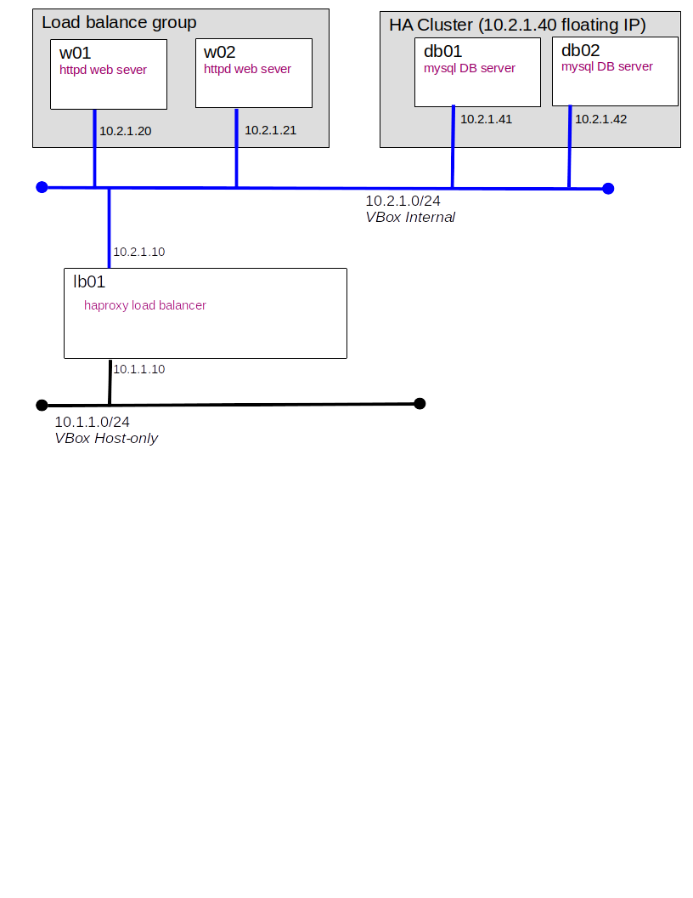

For this exercise we will expand on our 3-Tier architecture to make it ready for 'production'. Our 3-Tier environment provided fault protection should we loose a web server but no protection against database server failure. Today we will fix that.

Our database cluster needs storage. You may choose to implement this using: DRBD, shared LVM disk, or file server.
You will demonstrate your work to your instructor or submit a short video. Your video must demonstrate the failure of one node in the database cluster and a short statement defending your choice of storage. (e.g. I chose to use DRBD|LVM|FileServer because...)
For a bonus point identify the HUGE single point of failure that remains, for this exercise consider each VM a bare-metal server.